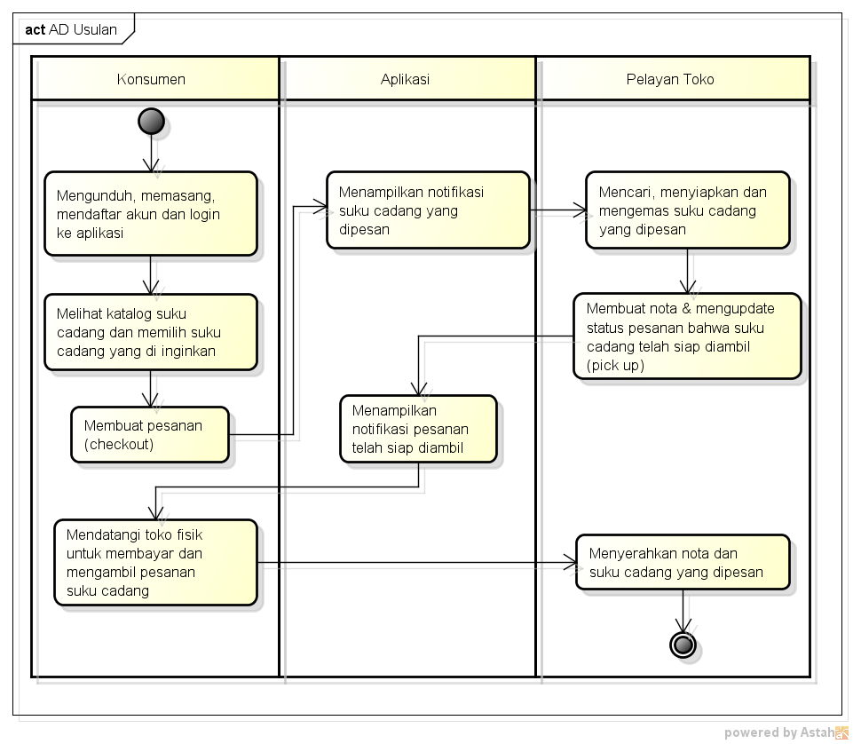

NIM : 1811500114
Nama : Maman Abdurahman
Kelompok : TI6A
Hasil saya menyadur dipertemuan 3 :
1)Dosen selalu mengingatkan prihal absen dan tugas menyadur
2)Menjelaskan Kembali tentang analisis AD Berjalan bahwa studi kasus tersebut dilakukan secara langsung
3)Menjelaskan bahwa AD digunakan untuk menggambarkan proses bisnis agar terstruktur sama halnya dengan SOP pada sebuah perusahaan
4)Membuat AD Usulan yaitu dengan membuat 3 partisi yang terdiri dari Konsumen,Aplikasi dan Pelayan Toko

Download file latihan astah disini